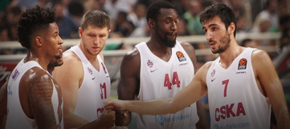
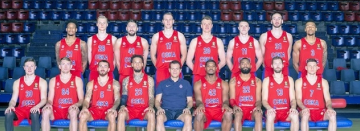

Roster Rundown: CSKA Moscow
The defending Turkish Airlines EuroLeague champions have made significant changes this past summer, and no
addition has made more noise than the arrival of last season's Alphonso Ford Trophy winner, Mike James. However,
he's just one of four new pieces in CSKA's backcourt. James will be sharing playmaking duties with a EuroLeague
newcomer, Ron Baker, as well as with veteran sharpshooter Janis Strelnieks. Swingman Darrun Hilliard is a an
athletic presence at the wings who is looking to build on his first EuroLeague season, while CSKA's frontcourt
became more versatile with the arrivals of big men Johannes Voigtmann and Kostas Koufos, the latter of whom is
set to make his EuroLeague debut after 11 seasons in the NBA.

Arrivals
- Darrun Hilliard(SG/F)
- Ron Baker (G)
- Mike James (PG)
- Johannes Voigtmann (PF/C)
- Janis Strelnieks (PG)
- Kostas Koufos (C)
Departures
- Alec Peters (PF)
- Othello Hunter (C)
- Nando De Colo (SG)
- Cory Higgins (SG/F)
- Sergio Rodriguez (PG)